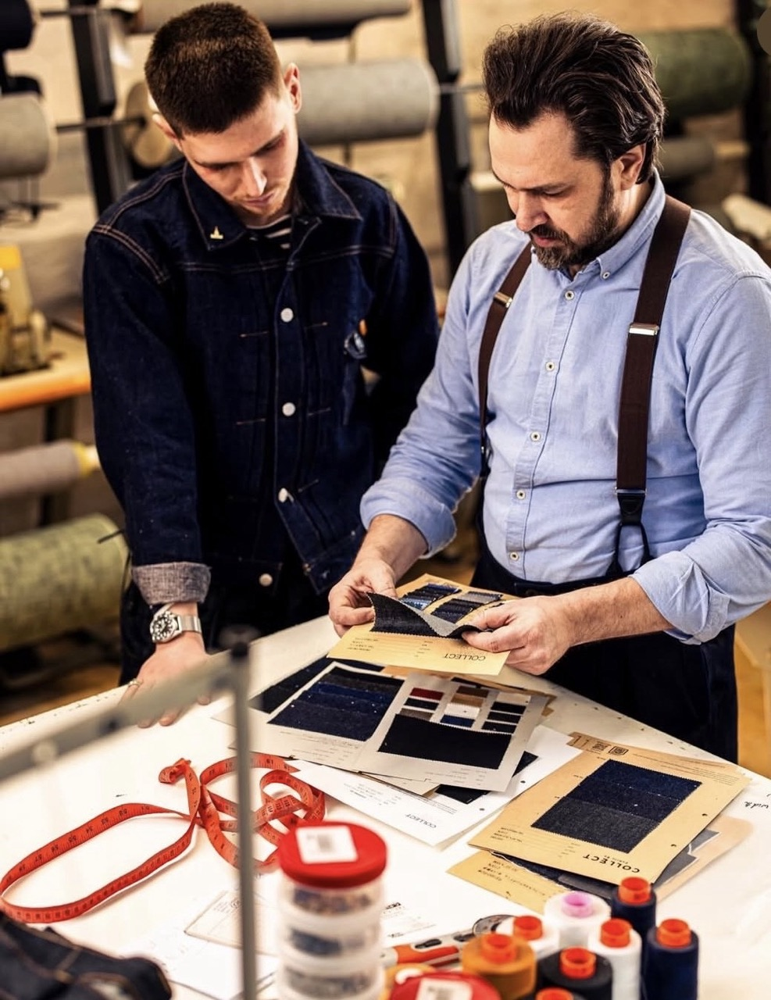
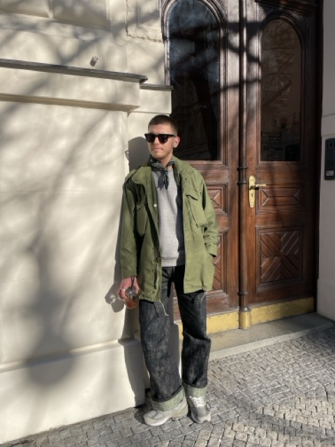
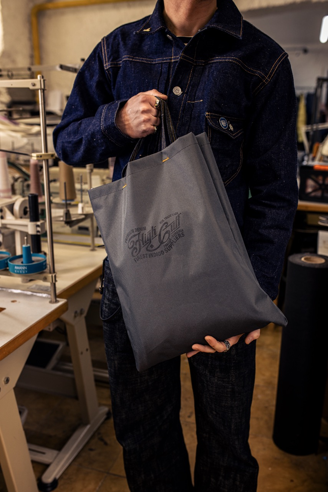
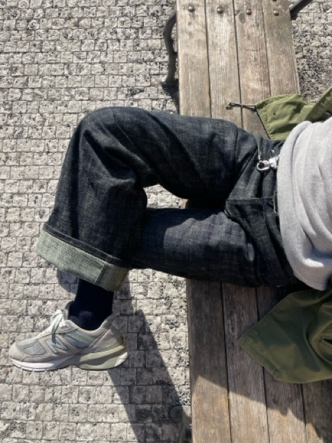
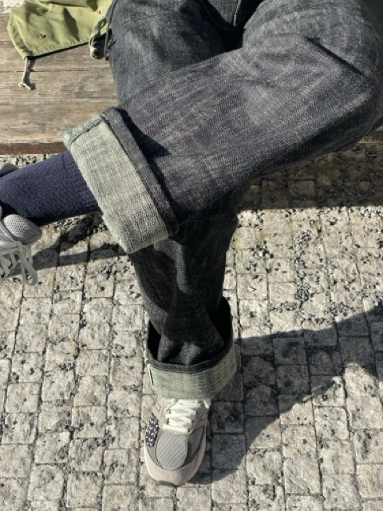
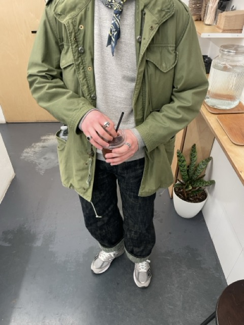

My name is Gleb Arinkin. My journey in the heritage world is built on years of handling the real thing. Ex-Clochard 9.2 and DenimHeads Prague. I know the industry from the inside — from the iconic store floors to collaborations with fellow makers.

Collaboration with HighCuff. Fabric selection and silhouette development.

Personal styling and creative direction. Archival workwear in urban environment.



